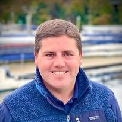
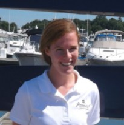
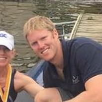
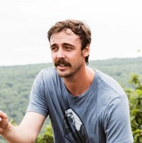
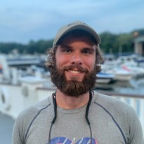
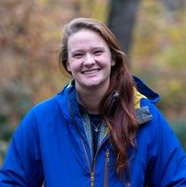

MICHAEL WIENEKE
Director of Rowing
Mike graduated from St. Lawrence University in 2007 with a degree in Government and a minor in Economics. While at St. Lawrence, he was a three year member of the varsity crew team. He competed with his team at the Head of the Charles, Head of the Fish, New York State Championships and ECAC Championships, as well as many other smaller regattas. During his senior year Mike was co-captain of the Men’s Crew team and was recognized as the 2007 Athletic Ambassador for his work though out the St. Lawrence community. Mike represented St. Lawrence University and the Liberty League Athletic Conference on the Student Athlete Advisory Committee gaining invaluable experience with college recruiting and the NCAA.
Mike joined the Water Club coaching staff in the Fall of 2008 as an assistant coach with the middle school program. In the Spring of 2010 he transitioned into a full time position as Program Coordinator for Junior Rowing. In this position Mike oversaw all of our junior programming and served as the Head Coach of our Middle School teams.
In the Fall of 2010 Mike was promoted to Director of Rowing where he oversees all of our Masters and Junior programs.
Mike can be reached via e-mail at mwieneke@greenwichwaterclub.com

HEIDI HUNSBERGER
Assistant Director of Rowing
Varsity Women, Co-Head Coach
Heidi graduated from the University of Wisconsin-Madison in 2009 with a B.A. in English. During her time at Wisconsin, Heidi spent four years on the women’s lightweight team. A two-time All-American coxswain, Hunsberger coxed the UW lightweight eight to IRA national titles and EAWRC conference titles in 2008 and 2009. An Academic All-Big Ten rower in 2009, she was also awarded a Performance Award by the UW athletic department in 2009 for academic excellence.
After graduation, Heidi spent one year as the volunteer assistant for the novice lightweight team at Wisconsin. She became the novice lightweight coach in August of 2010, and also held duties assisting the varsity lightweight program until June of 2013. During her time coaching at Wisconsin, Heidi coached the lightweight 4+ to three back to back IRA National titles.
A native of Wilton, CT, Heidi started her rowing career in 2002 with Norwalk River Rowing Association and Maritime Rowing Club.
As Girl's Head Coach, Heidi has helped the Varsity Women qualify the Lightweight 8+ for US Rowing Youth Nationals in 2014 & 2015.
Heidi can be reached at hhunsberger@greenwichwaterclub.com .
CATHERINE STARR
Varsity Women, Co-Head Coach
Catherine graduated from Brown University in 2005 with a B.A. in the History of Art. At Brown she was a team captain, NCAA Champion, All-American and CRCA Scholar Athlete. Catherine competed for the United States, winning a U23 World Championship in the 4- in 2005....
View Details
ROBERT MONTAGUE
Novice Boys Head Coach
Robert Montague is the Head Junior Men's Coach at Greenwich Crew, a position he has held since 2013. Robert started rowing in 1998 on the Norwalk River. He went on to row at the University of Connecticut and began coaching the UConn men after graduating.....
View Details
CARY WASSERMAN
Mens Co-Head Coach, Varsity Mens Head Coach
Cary Wasserman started his rowing career as coxswain at the Salisbury School under legendary Head Coach, Dick Curtis. At Salisbury, Cary became the first coxswain to be named the Hugh Cheney Outstanding Oarsmen (MVP) in the 100+ year history of the school......
View Details

DARREN GARY
Masters Rowing, Head Coach
BERT HARNEY
Varsity Men, Assistant Coach
Masters Rowing, Assistant Coach
QUENTIN THIBAULT
Novice Men, Assistant Coach
MICHAEL WIENEKE
Director of Rowing
Originally from Arlington, Texas, Darren began rowing his sophomore year in high school at the McCallie School in Chattanooga, Tennessee, winning several SE Regional championships to qualify for the Youth National Championships in 2004 and 2005......
View Details
PAUL RUGGEBERG
Novice Girls, Head Coach
Varsity Women, Assistant Coach
Masters Rowing, Assistant Coach
A native of Greenwich, CT, Paul began his rowing career in high school with Greenwich Rowing. After graduation, Paul completed a post graduate year at Kent School for rowing....
View Details
NICOLE CHALOUX
Varsity Women, Assistant Coach
Novice Women, Assistant Coach
Masters, Rowing, Assistant Coach
A native of Newtown, CT, Nicole began rowing in high school with GMS Rowing Center in New Milford, CT. Upon graduation, Nicole attended a small university for two years before transferring to the University of Connecticut and walking on to their Division I rowing team.....
View Details

BERT HARNEY
Varsity Men, Assistant Coach
Masters Rowing, Assistant Coach
Bert began rowing in high school at Salisbury school. Originally reluctant to start rowing after hearing it was a grueling sport, he eventually caved his junior year after seeing his physics teacher was a big time rower.....
View Details

QUENTIN THIBAULT
Novice Men, Assistant Coach
Quentin Thibault, better known as Coach "Q", is a native of Greenwich, CT. He began his rowing career with Greenwich Crew in High School as a member of the varsity team. In the spring of 2018, Coach Q became the Assistant Coach for the Novice Men. In his first season, he helped lead the team to a second place team finish at Northeast Regionals....
View Details

KELSEY BAROLAK
Varsity Men, Assistant Coach
A native of Riverside, CT, Kelsey began rowing in high school at St. Andrew's School, Delaware. She went on to row four years at harvard, where she competed in two NCAA Division I Championships. After graduation from Harvard in 2017, she spend a year at the University of Cambridge where she earned her masters in Psychology and Education....
View Details